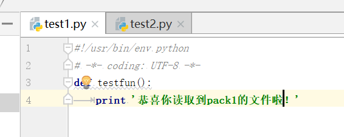

import os
import sys
#步骤1：当前处于pack2d的test2文件目录，路径为dir1
dir1=os.path.dirname(__file__)
print '当前文件目录：',dir1
#步骤2：pack2的主目录是day6，路径为：dir2
dir2=os.path.dirname(os.path.dirname(__file__))
print '当前文件的主目录：',dir2
#步骤3：把day6目录加到环境变量中
sys.path.append(dir2)
for item in sys.path:
print item
#步骤4:直接导入test1文件，然后再次调用test1里面的函数，不会再报错了
import test1
test1.testfun()
执行结果如下：
test1中函数内容是：
